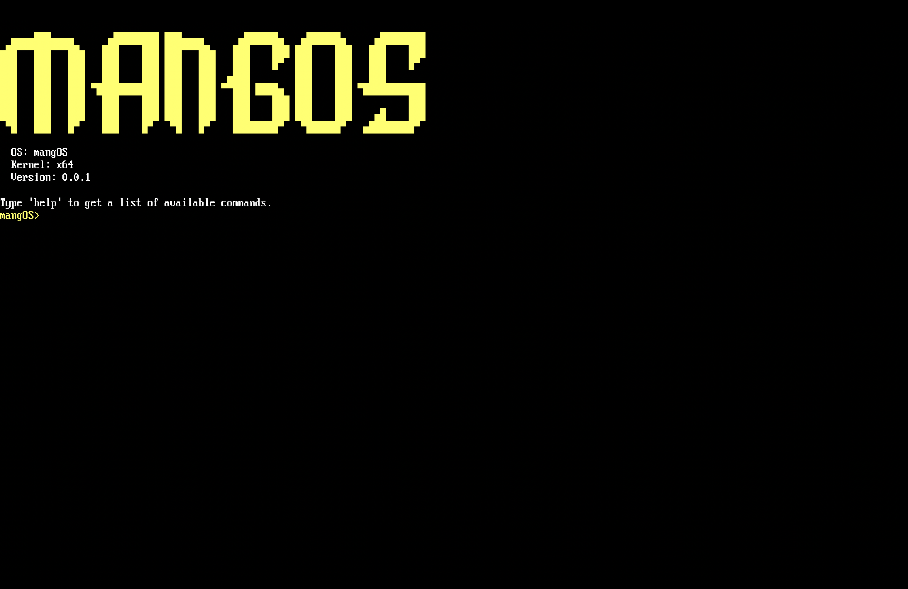
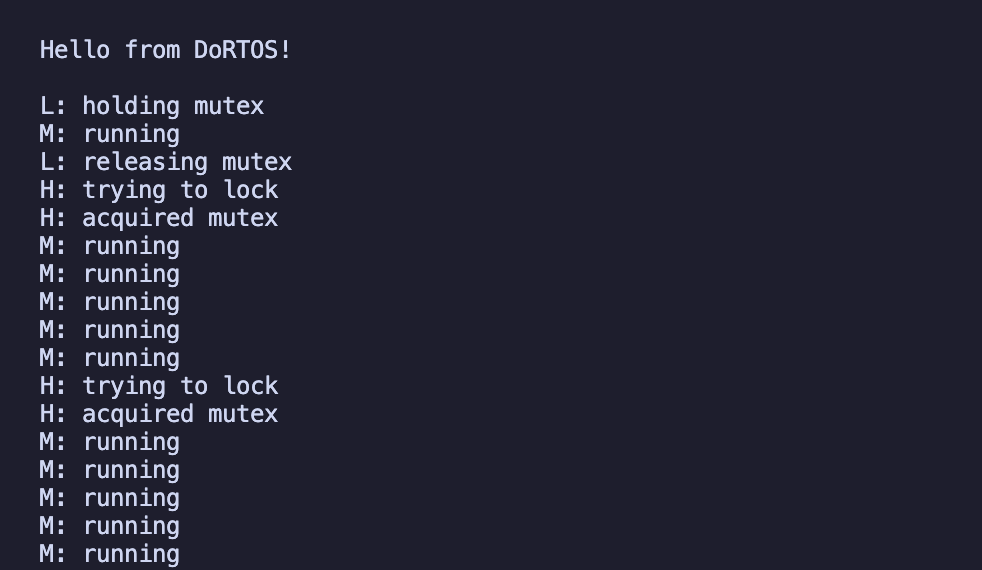
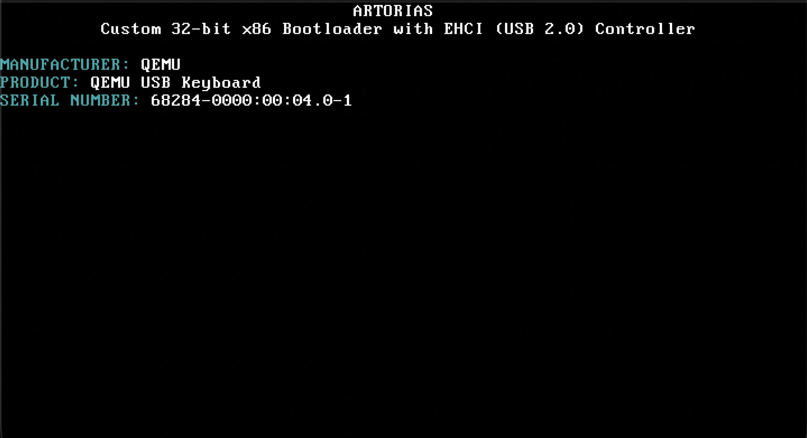
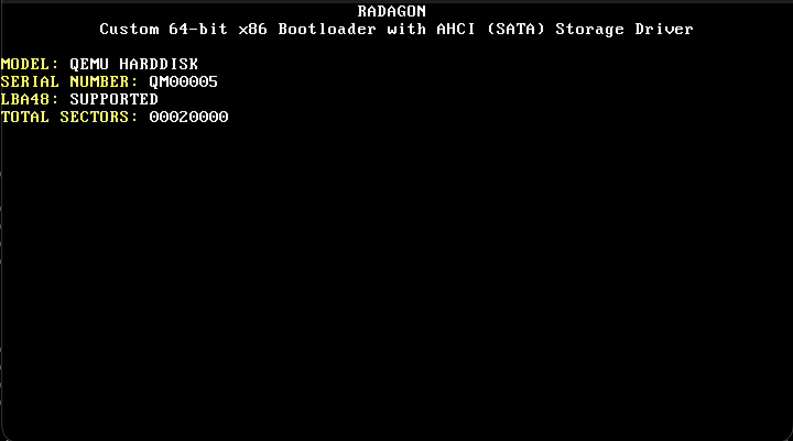

Writing an RTOS Without Hardware
February 24, 2026
COWARDS DIE MANY TIMES BEFORE THEIR DEATHS; THE VALIANT NEVER TASTE OF DEATH BUT ONCE.
I’m a Computer Science student at the University of Florida focused on firmware and low-level systems. I work primarily in C and assembly, building operating systems, bootloaders, RTOS components, and hardware drivers from scratch. Apart from programming, I love to read dystopian and horror novels and usually watch dark comedy shows in my free time. I also dabble in creating my own ambient music.
Developed a full-stack appointment booking system using Node.js, PostgreSQL, and Redis caching that cut database query overhead by 40%. Added client-side JavaScript validation to decrease invalid submissions by 30%, while building a Chart.js monitoring dashboard to track system throughput.




February 24, 2026
February 21, 2026
January 10, 2026
December 20, 2025